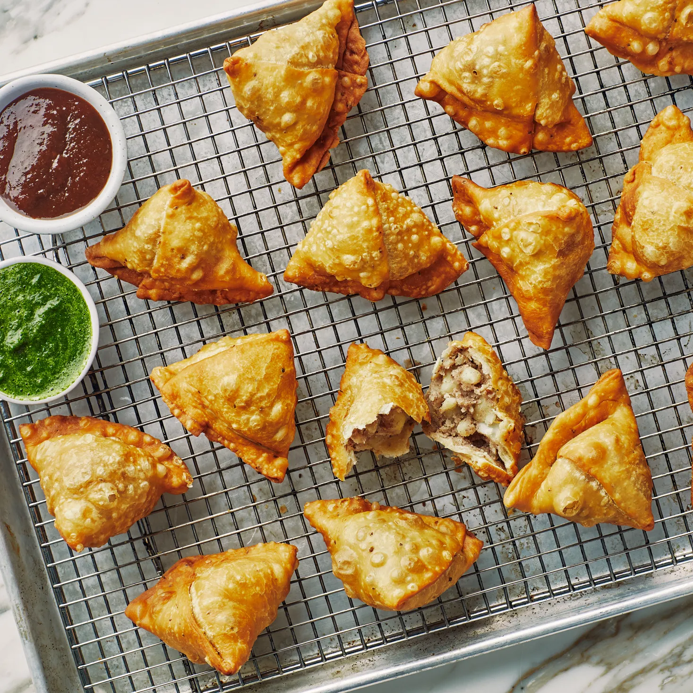

Samosa

Description
Samosa, does it need any introduction? I don't think so!
The triangular shaped flaky pastry filled with spicy potato, chicken or lamb filling is a popular snack not only
in India but in several countries of the world.
Because samosa is so so common in India (you literally get samosa and chai at every other street corner), I
always considered it to be a quintessential Indian delicacy
It's there in every party, office meeting, chai meet-ups, you name it and samosa will be there!
Ingredients
- 2 cups all purpose flour (maida) 260 grams
- 1 teaspoon ajwain carom seeds
- 1/4 teaspoon salt
- 4 tablespoons + 1 teaspoon oil 45 ml + 5 ml
- water to knead the dough, around 6 tablespoons
Samosa Filling
- 3-4 medium potatoes 500-550 grams
- 2 tablespoons oil
- 1 teaspoon cumin seeds
- 1 teaspoon fennel seeds
- 2 teaspoons crushed coriander seeds
- 1 teaspoon finely chopped ginger
- 1 green chili chopped
- 1/4 teaspoon hing asafoetida
- 1/2 cup +2 tablespoons green peas I used frozen green peas which I soaked in warm water for 10-15 minutes
before using
- 1 teaspoon coriander powder
- 1/2 teaspoon garam masala
- 1/2 teaspoon amchur dried mango powder
- 1/4 teaspoon red chili powder or add more to taste
- 3/4 teaspoon salt or to taste
Steps
- Start by making the samosa dough. To a large bowl, add flour, ajwain, salt and mix well.
- Add the oil and then start mixing with your fingers.
- Rub the flour with the oil until the oil is well incorporated in all of the flour. Do this for 3 to 4
minutes, you don't want to rush this step.
- Once incorporated, the mixture resembles crumbs.
- Press some flour between your palm- it should form a shape (& not crumble) - means oil is enough and well
incorporated.
- Now, start adding water, little by little and mix to form a stiff dough.
- Don't overwork the dough and don't knead a soft dough. It should just come together and form a stiff dough.
I used around 6 tablespoons of water here.
- Cover the dough with a moist cloth and let it rest for 40 minutes. I usually soak a paper towel in water and
then squeeze out all the water and then cover my dough with that.
- Boil potatoes until done.
8 to 9 whistles on high heat with natural pressure release if using stove-top pressure cooker or if using
Instant Pot, high pressure 12 minutes with natural pressure release on a trivet with 1 cup water in the
bottom of the pot.
- Peel the skin and them mash the potatoes. Set aside.
- Heat 2 tablespoons of oil in a pan on medium heat. Once the oil is hot, add the cumin seeds, fennel seeds
and crushed coriander seeds.
- Let the seeds sizzle for few seconds and then add the chopped ginger, green chili and hing. Cook for 1
minute.
- Add the boiled & mashed potatoes and green peas to the pan.
- Mix everything together. I use my potato masher to combine the spices and seasonings well with the potatoes
and peas.
- Add the coriander powder, garam masala, amchur, red chili powder and salt.
- Mix to combine. Once it's all well incorporated, remove pan from heat and let the filling cool down a bit.
- Once the dough has rested, give it a quick knead. Then divide the dough into 7 equal parts of around 58-60
grams each.
- Roll one dough ball into a circle-oval kind of shape, around 6-7 inches in diameter and then cut it into two
parts.
- Take one part and apply water on the straight edge/side. I usually mix some flour with water so that it
forms a nice glue.
- Now bring the two ends of the straight edge together and pinch them to form a cone. See picture (#20) for a
better idea.
- Pinch the pointed ends to make it a perfect cone shape.
- Fill the samosa with the potato filling, around 1 to 2 tablespoons. Don't overfill the samosa.
- Now again apply water all around the circumference of the cone as you have to seal it. Pinch the opposite
side (side opposite to where you pinched to form the cone) to form a plate
- Now pinch the edges and seal the samosa.
- Your samosa is now ready. Repeat with remaining dough. Always remember to keep the filled samosa covered
with moist cloth while roll and fill the others.
- Now heat oil in a kadai on low heat. To check if oil is ready, drop a small piece of dough into the oil. It
should take few seconds to come up to the surface. That means the oil is ready.
- Fry on low heat. After around 10-12 minutes, the samosa will become firm and light brown in color.
- At this point, increase the heat to medium and fry until it gets nicely browned.